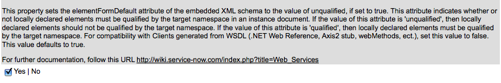

Microsoft .NET Web Services Client Examples
| |
Note: This article applies to Fuji and earlier releases. For more current information, see Microsoft .NET Web Services Client Examples at http://docs.servicenow.com
The ServiceNow Wiki is no longer being updated. Visit http://docs.servicenow.com for the latest product documentation. |
1 Requirements
.NET 2.0 Versions and Higher:
- An "elementFormDefault" value of qualified means that an unqualified element is in the default namespace defined on an ancestor. If it is "unqualified" then an unqualified element is in the empty namespace (xmlns=""). The default is "unqualified".
- To Resolve the .NET Client deserialization failure you should go to System Properties -> Web Services and uncheck the property that sets the elementFormDefault attribute of the embedded XML schema to the value of unqualified. Save the property setting and recreate your WSDL Reference.cs class. See Also "Compatibility with Clients generated from WSDL" below.
|  |
{kind=link}
2 insert
The following is a sample Visual Basic .NET program that inserts a core_company record.
Public Class Class1
Shared Sub Main()
Dim proxyCompany As New core_company.localhost.ServiceNow()
Dim companyInsert As New core_company.localhost.insert()
Dim companyInsertResponse As core_company.localhost.insertResponse
With companyInsert
.name = "Test Company SKF 2"
.contact = "SKF"
.customer = True
.customerSpecified = True
End With
companyInsertResponse = proxyCompany.insert(companyInsert)
Console.WriteLine(companyInsertResponse.sys_id)
End Sub
End Class
Sample Visual Basic .NET project
{kind=link}
3 getKeys
| |
Note: The field userGetKeys.activeSpecified must be set to true when setting userGetKeys.active to any value. |
localhost.getKeys userGetKeys = new localhost.getKeys();
localhost.getKeysResponse userGetKeysResponse = new localhost.getKeysResponse();
userGetKeys.active = true;
userGetKeys.activeSpecified = true;
userGetKeysResponse = proxyUser.getKeys(userGetKeys);
4 getRecords
localhost.getRecords record = new WSCompany2.localhost.getRecords();
record.sys_updated_on = " >= 2006-01-01";
record.closed_at = " <= 2006-02-01";
record.incident_state = "1";
record.caller_id = "f298d2d2c611227b0106c6be7f154bc8";
localhost.getRecordsResponseGetRecordsResult[] r = proxyUser.getRecords(record);
for (int i = 0; i < r.Length; i++)
{
string sys_id = r[i].sys_id;
string shortDesc = r[i].short_description;
string openedAt = r[i].opened_at;
}
5 get
localhost.get get = new localhost.get();
localhost.getResponse getResponse = new localhost.getResponse();
get.sys_id = "9d385017c611228701d22104cc95c371";
getResponse = proxy.get(get);
6 Advanced
6.1 End-to-end Tutorial
For an end-to-end tutorial on sending a web service to ServiceNow using C# .NET, see this wiki tutorial: Web_Services_C_Sharp_.NET_End_to_End_Tutorial
6.2 Working with Reference Fields
When querying for a reference field such as Assigned To or Caller Id you will need to use the sys_id for the record in the sys_user table and not the display value of the record.
6.3 Working with Date Fields
When querying for date fields you will need to make sure the date format used in the condition is the same format specified in System Properties as shown below.
{kind=link}
6.4 ECC_Queue GetRecords with GetRecordsResponseGetRecordsResult[]
// Create proxy and methods
eccQueue.ServiceNow proxy = new ECC_QUEUE_GET_RECORD.eccQueue.ServiceNow();
eccQueue.getRecords get = new ECC_QUEUE_GET_RECORD.eccQueue.getRecords();
// Only get the records for today
get.sys_created_on = " > 2008-01-30";
eccQueue.getRecordsResponseGetRecordsResult[] getResults = proxy.getRecords(get);
// Print the results to the console
foreach (eccQueue.getRecordsResponseGetRecordsResult r in getResults)
{
Console.WriteLine("Agent: " + r.agent);
Console.WriteLine("Topic: " + r.topic);
Console.WriteLine("Topic: " + r.topic);
Console.WriteLine("Source: " + r.source);
Console.WriteLine("Response to: " + r.response_to);
Console.WriteLine("Queue: " + r.queue);
Console.WriteLine("State: " + r.state);
Console.WriteLine("Created: " + r.sys_created_on);
Console.WriteLine("Processed: " + r.processed);
Console.WriteLine("Sequence: " + r.sequence);
Console.WriteLine("Payload: " + r.payload);
Console.WriteLine();
}
Console.ReadLine();
6.5 ECC_Queue Payload=Incident Insert with InsertResponse
// Create proxy and methods
ecc_incident.ServiceNow proxy = new ecc_incident.ServiceNow();
ecc_incident.insert insert = new ecc_incident.insert();
ecc_incident.insertResponse insertResponse = new ecc_incident.insertResponse();
ecc_incident.insertPayload payload = new ecc_incident.insertPayload();
ecc_incident.insertPayloadIncident incident = new ecc_incident.insertPayloadIncident();
// Required Conditions in "Process Web Service Automap" Business rule
insert.agent = "Web Service Automap";
insert.queue = "input";
insert.state = "ready";
// Incident field Value
incident.location = "108752c8c611227501d4ab0e392ba97f";
incident.assigned_to = "97000fcc0a0a0a6e0104ca999f619e5b";
incident.caller_id = "5137153cc611227c000bbd1bd8cd2007";
incident.category = "hardware";
incident.short_description = "Testing ecc_queue Incident insert.";
incident.problem_id = "9d4f87a3c6112287010ed0a5ccdcba04";
payload.incident = incident;
insert.payload = payload;
insertResponse = proxy.insert(insert);
// Get the Incident Number of created Incident
// The map coalesces on the number field so a update will now be done
incident.number = insertResponse.number;
incident.location = "dc86690e0a0a0a65017c5ffcddbf224f";
payload.incident = incident;
insert.payload = payload;
insertResponse = proxy.insert(insert);
Console.WriteLine("Response: " + insertResponse.sys_id);
6.6 Using the glide.soap.return_displayValue Property
The glide.soap.return_displayValue property will specify how reference fields are returned. When this property is set to true all reference fields returned from a request will be returned with the display value rather than the sys_id. The property is set to false by default. There are two different ways to set the property to true.
- Put in a request on /hi to have the property added to your instance with a value set to true.
- Add the property to the request URL as follows:
The following example demonstrates the use of the glide.soap.return_displayValue property.
using System;
using System.Collections.Generic;
using System.ComponentModel;
using System.Data;
using System.Drawing;
using System.Net;
using System.Text;
using System.Windows.Forms;
namespace Create_Incident
{
public partial class NewIncident : Form
{
System.Net.ICredentials cred = new System.Net.NetworkCredential("cmitch", "cmitch");
Properties.ServiceNow proxyProp = new Create_Incident.Properties.ServiceNow();
Properties.get getProperties = new Create_Incident.Properties.get();
Properties.getResponse getPropertiesResponse = new Create_Incident.Properties.getResponse();
Properties.getKeys getPropertiesKeys = new Create_Incident.Properties.getKeys();
Properties.getKeysResponse getPropertiesKeysResponse = new Create_Incident.Properties.getKeysResponse();
Choice.ServiceNow proxyChoice = new Choice.ServiceNow();
CI.ServiceNow proxyCI = new CI.ServiceNow();
Incident.ServiceNow proxyIncident = new Incident.ServiceNow();
Locations.ServiceNow proxyLoc = new Locations.ServiceNow();
User.ServiceNow proxyUser = new User.ServiceNow();
CI.getRecords getCIRecords = new CI.getRecords();
Choice.getRecords getChoiceRecords = new Choice.getRecords();
Incident.getRecords iRecord = new Incident.getRecords();
User.getRecords getUserRecords = new User.getRecords();
Locations.getRecords getLocRecords = new Locations.getRecords();
Incident.insert newIncident;
Incident.update updateIncident;
Incident.get getIncident = new Incident.get();
Incident.getResponse getIncidentResponse = new Incident.getResponse();
Incident.insertResponse iResponse = new Incident.insertResponse();
Incident.updateResponse uResponse = new Incident.updateResponse();
private string sysId = "";
public NewIncident()
{
InitializeComponent();
}
private void NewIncident_Load(object sender, EventArgs e)
{
// Set all the credetials
proxyProp.Credentials = cred;
proxyChoice.Credentials = cred;
proxyCI.Credentials = cred;
proxyIncident.Credentials = cred;
proxyLoc.Credentials = cred;
proxyUser.Credentials = cred;
//// Verify the glide.soap.return_displayValue property is set to true for these requests
//getPropertiesKeys.name = "glide.soap.return_displayValue";
//getPropertiesKeysResponse = proxyProp.getKeys(getPropertiesKeys);
//getProperties.sys_id = getPropertiesKeysResponse.sys_id[0];
//getPropertiesResponse = proxyProp.get(getProperties);
//if (getPropertiesResponse.value != "true")
// return;
// Set all name combo box's
getUserRecords.active = true;
User.getRecordsResponseGetRecordsResult[] userRecords = proxyUser.getRecords(getUserRecords);
callerBox.Items.Add("");
openBox.Items.Add("");
assignBox.Items.Add("");
uassignBox.Items.Add("");
for (int i = 0; i < userRecords.Length; i++)
{
callerBox.Items.Add(userRecords[i].name);
openBox.Items.Add(userRecords[i].name);
if (userRecords[i].accumulated_roles.Contains("itil"))
{
assignBox.Items.Add(userRecords[i].name);
uassignBox.Items.Add(userRecords[i].name);
}
}
// Set the Location combo box
Locations.getRecordsResponseGetRecordsResult[] locRecords = proxyLoc.getRecords(getLocRecords);
locBox.Items.Add("");
ulocBox.Items.Add("");
for (int i = 0; i < locRecords.Length; i++)
{
locBox.Items.Add(locRecords[i].name);
ulocBox.Items.Add(locRecords[i].name);
}
// Set the Category Choice combo box
getChoiceRecords.name = "incident";
getChoiceRecords.element = "category";
Choice.getRecordsResponseGetRecordsResult[] choiceRecords = proxyChoice.getRecords(getChoiceRecords);
categoryBox.Items.Add("");
ucategoryBox.Items.Add("");
for (int i = 0; i < choiceRecords.Length; i++)
{
categoryBox.Items.Add(choiceRecords[i].label);
ucategoryBox.Items.Add(choiceRecords[i].label);
}
// Set the Priority Choice combo box
getChoiceRecords.name = "task";
getChoiceRecords.element = "priority";
choiceRecords = proxyChoice.getRecords(getChoiceRecords);
priorityBox.Items.Add("");
upriorityBox.Items.Add("");
for (int i = 0; i < choiceRecords.Length; i++)
{
priorityBox.Items.Add(choiceRecords[i].label);
upriorityBox.Items.Add(choiceRecords[i].label);
}
// Set the CI combo box
CI.getRecordsResponseGetRecordsResult[] ciRecords = proxyCI.getRecords(getCIRecords);
configBox.Items.Add("");
uconfigBox.Items.Add("");
for (int i = 200; i < 220; i++) //temp.Length; i++)
{
configBox.Items.Add(ciRecords[i].name);
uconfigBox.Items.Add(ciRecords[i].name);
}
}
private void createBut_Click(object sender, EventArgs e)
{
newIncident = new Incident.insert();
newIncident.assigned_to = assignBox.Text;
newIncident.caller_id = callerBox.Text;
newIncident.location = locBox.Text;
newIncident.cmdb_ci = configBox.Text;
newIncident.opened_by = openBox.Text;
newIncident.due_date = dateBox.Value.ToString();
newIncident.category = categoryBox.Text.ToLower();
newIncident.priority = priorityBox.Text;
newIncident.short_description = descBox.Text;
newIncident.comments = commentBox.Text;
newIncident.u_soap_request = "no";
iResponse = proxyIncident.insert(newIncident);
getIncident.sys_id = iResponse.sys_id;
getIncidentResponse = proxyIncident.get(getIncident);
incidentCreatedLabel.Text = "Incident " + getIncidentResponse.number + " was created.";
clearBut_Click(sender, e);
}
private void updateBut_Click(object sender, EventArgs e)
{
updateIncident = new Incident.update();
if (unumberBox.Text == "")
{
MessageBox.Show("You must have an Incident number for an Update.", "Update Error", MessageBoxButtons.OK);
}
else
{
updateIncident.sys_id = sysId;
updateIncident.assigned_to = uassignBox.Text;
updateIncident.priority = upriorityBox.Text;
updateIncident.location = ulocBox.Text;
updateIncident.category = ucategoryBox.Text.ToLower();
updateIncident.due_date = uduedateBox.Text;
updateIncident.comments = ucommentBox.Text;
uResponse = proxyIncident.update(updateIncident);
}
}
private void clearBut_Click(object sender, EventArgs e)
{
assignBox.Text = "";
callerBox.Text = "";
locBox.Text = "";
configBox.Text = "";
openBox.Text = "";
dateBox.Text = DateTime.Now.ToLongDateString();
priorityBox.Text = "";
categoryBox.Text = "";
descBox.Clear();
commentBox.Clear();
unumberBox.Clear();
uassignBox.Text = "";
ulocBox.Text = "";
upriorityBox.Text = "";
uduedateBox.Text = "";
ucategoryBox.Text = "";
ucommentBox.Clear();
callerBox.Focus();
}
private void exitBut_Click(object sender, EventArgs e)
{
this.Close();
}
private void tabControl1_SelectedIndexChanged(object sender, EventArgs e)
{
if (tabControl1.SelectedIndex == 0)
{
this.AcceptButton = createBut;
this.incidentCreatedLabel.Text = "";
}
else if (tabControl1.SelectedIndex == 1)
{
this.AcceptButton = updateBut;
}
}
private void unumberBox_KeyPress(object sender, KeyPressEventArgs e)
{
if (char.IsLetter(e.KeyChar))
{
e.Handled = true;
}
}
private void lookUpBut_Click(object sender, EventArgs e)
{
iRecord.active = true;
iRecord.number = "INC" + unumberBox.Text.ToString();
Incident.getRecordsResponseGetRecordsResult[] incRec = proxyIncident.getRecords(iRecord);
if (incRec[0].sys_id != "")
{
sysId = incRec[0].sys_id;
uassignBox.Enabled = true;
uassignBox.Text = incRec[0].assigned_to;
ulocBox.Enabled = true;
ulocBox.Text = incRec[0].location;
upriorityBox.Enabled = true;
upriorityBox.Text = incRec[0].priority;
uconfigBox.Enabled = true;
uconfigBox.Text = incRec[0].cmdb_ci;
uduedateBox.Enabled = true;
uduedateBox.Text = incRec[0].due_date;
ucategoryBox.Enabled = true;
ucategoryBox.Text = incRec[0].category;
ucommentBox.Enabled = true;
ucommentBox.Text = incRec[0].comments;
uduedateBox.Enabled = true;
uduedateBox.Text = incRec[0].due_date;
updateBut.Enabled = true;
}
}
}
}